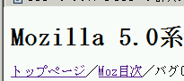
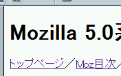

外部スタイルシートで2バイト文字を使用する場合は、@charset宣言で文字コードを明示しなければ指定内容が無視されてしまう。
<link rel="stylesheet" type="text/css" href="normal.css" title="標準"> <link rel="alternate stylesheet" type="text/css" href="b014a.css" title="charset無"> <link rel="alternate stylesheet" type="text/css" href="b014b.css" title="charset有">
代替スタイルシート「b014a.css」
body {
font-family: 'ＭＳ 明朝', 'Osaka－等幅', sans-serif;
}
代替スタイルシート「b014b.css」
@charset "Shift_JIS";
body {
font-family: 'ＭＳ 明朝', 'Osaka－等幅', sans-serif;
}
スタイルシート切り替え（メニューバーの「表示」内にあります）で、適用するスタイルシートを切り替えてください。
「charset無」（b014a.css）に切り替えたときの表示です。
Moz1.0での表示
N6.2.3での表示
N6.2.3では名前に2バイト文字が使われているフォントが無視されました。Moz1.0では文字コード無指定でも2バイト文字を認識しています。